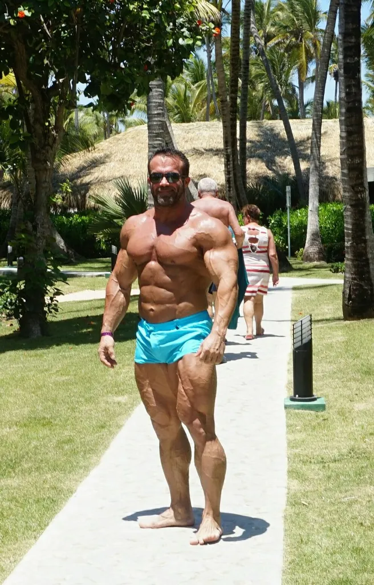
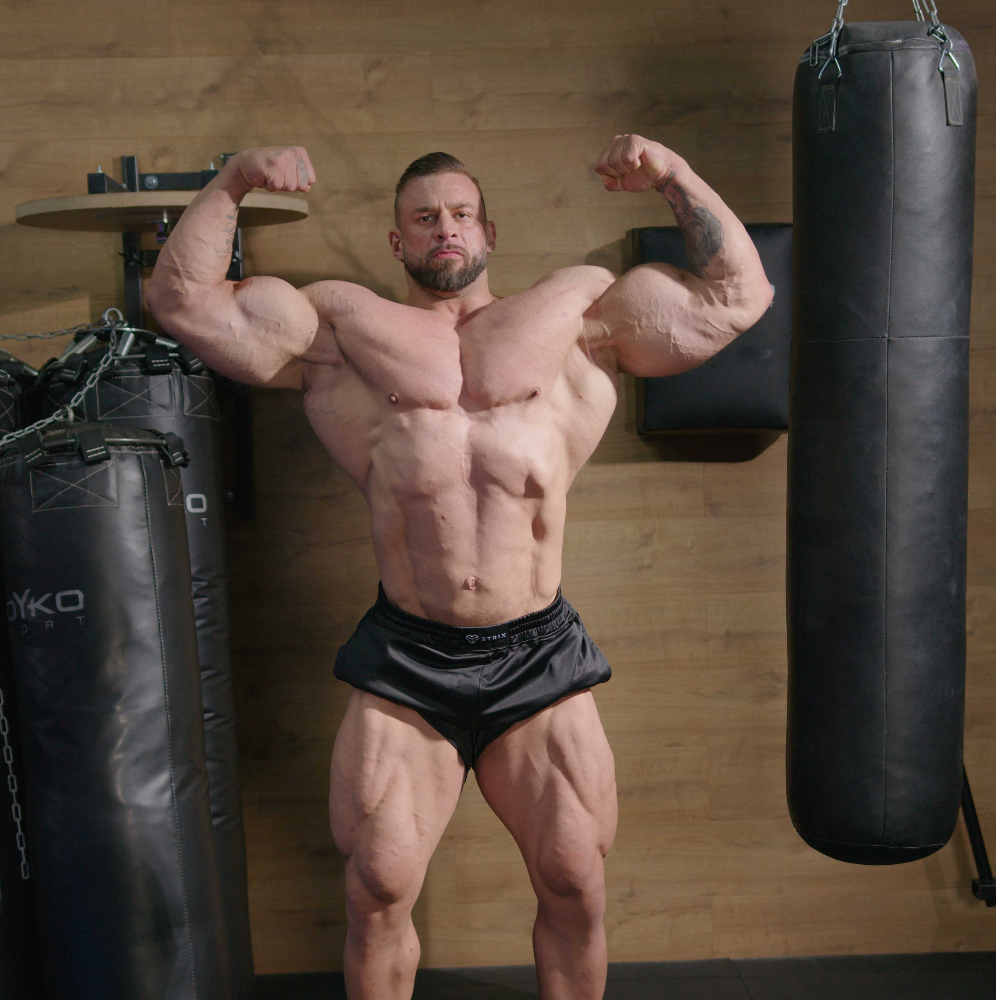
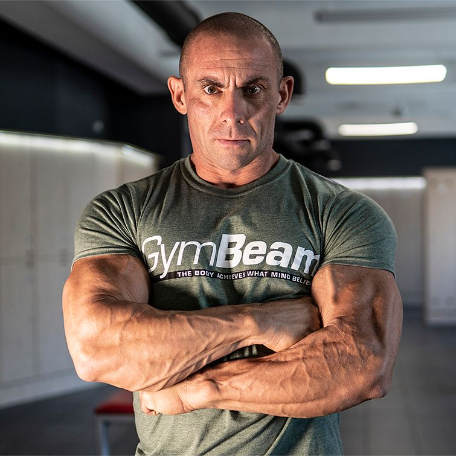
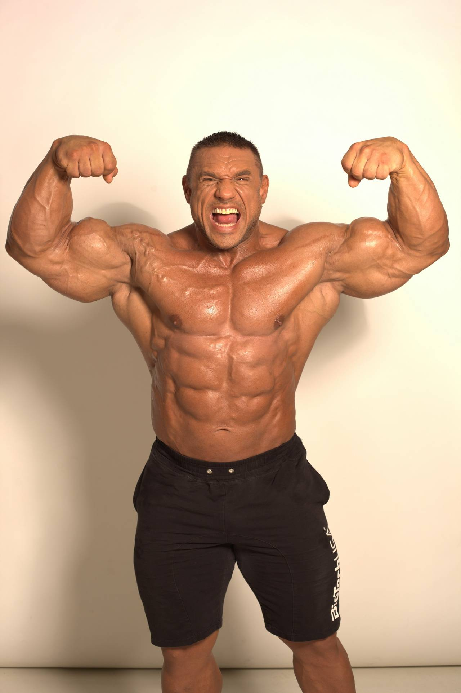

A testépítés története és jelentősége Magyarországon
A testépítés egy olyan sportág, amely a fizikai erő, izomtömeg és esztétika tudatos fejlesztésére épül. Bár Magyarországon a sport kezdetben kevésbé volt ismert, az elmúlt évtizedekben egyre nagyobb figyelmet kapott, és mára számos versenyző, edző és közösség találta meg benne a hivatását. A testépítés nem csupán a versenyzésről szól: sokak számára életforma, amely életmódot, kitartást és önfegyelmet jelent.
Kathi Béla – példa és ikon
Talán a legismertebb magyar testépítő és erőemelő Kathi Béla volt. Bélát nemcsak versenyzőként ismerték, hanem mint motiváló személyiséget és sportközösség-építőt is. Pályafutása során több jelentős eredményt ért el: kétszer nyerte meg a Scitec Superbody abszolút kategóriáját, volt WABBA világbajnok, továbbá fekvenyomásban és erőemelésben országos és európai bajnoki címet szerzett. 2010-ben 360 kg-os guggolást hajtott végre egy erőemelő segmentben, ami nem hivatalos világcsúcsnak számított speciális felszerelés nélkül.
Eredményei és karizmája révén Kathi Béla nem csupán a hazai versenypódiumokon vált ismertté, hanem motivációt adott sokaknak, hogy a testépítést és az egészséges életmódot válasszák. 2025-ben azonban tragikus hirtelenséggel elhunyt egy biciklibalesetben, ami mély megrendülést okozott a sportközösségben. FEOL
A halála után a Superbody verseny egyik legnagyobb kategóriáját róla nevezték el, és egy emlékszobrot is állítottak, hogy sportbeli és közösségépítő teljesítményének emlékét tovább őrizzék.
Bereczki Krisztián – profi versenyző
A magyar testépítés másik meghatározó alakja Bereczki Krisztián, aki hosszú évek kemény munkájával elérte, hogy IFBB PRO státuszt szerezzen, vagyis profi testépítőként versenyezzen nemzetközi szinten.
Krisztián versenyzői karrierje során több súlycsoportban és rendezvényen is megmérette magát, beleértve profi kvalifikációs versenyeket is, ahol dobogós helyezéseket szerzett.
A sportban eltöltött évek alatt edzőként is aktív szerepet vállalt, és tapasztalatát mások fejlődésére fordította.
Bohos Kornél és más hazai nevek
A magyar testépítő közösségben Bohos Kornél neve is ismert. Ő és Bereczki együtt is versenyeztek, és korábban különböző kvalifikációs versenyeken is jól szerepeltek, ahol például Kornél második helyezést ért el egy világbajnokságra való kvalifikáció során.
A hazai film- és dokumentumfilmkészítés is foglalkozott ezzel a sportággal. Bódi László rendezésében készült el a „Testépítés – feketén-fehéren” című dokumentumfilm, amelyben több hazai testépítő-versenyző is szerepel, többek között Bohos Kornél és Bereczki Krisztián, de más sportolók, edzők és szakemberek is feltűnnek a filmen. A dokumentumfilm célja, hogy őszintén bemutassa a sportágat, a versenyfelkészülést, a diétát és a testépítők mindennapi küzdelmeit.
A sportág közösségi és kulturális hatása
A testépítés Magyarországon mára nem csak versenysport; közösségi események, nyári rendezvények, edzőtársaságok és motivációs körök alakultak ki. Például a Scitec Muscle Beach rendezvény évről évre több száz látogatót vonz a Balatonhoz, ahol a hazai és nemzetközi sztárok, valamint amatőr sportolók egyaránt találkozhatnak, tapasztalatot cserélhetnek és együtt edzhetnek.
Összességében elmondható, hogy a testépítés Magyarországon élő és fejlődő sportág, amelyben a sportolói eredmények mellett a közösségi élmény és a személyes fejlődés is központi szerepet játszik. A hazai sportolók nemcsak versenypódiumokon, hanem a közösségi médiában és rendezvényeken keresztül is inspirálják azokat, akik szeretnének egészségesebben élni és fejlődni.